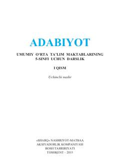

5A5-sinf o'quvchilari uchun mo'ljallangan adabiyot fani darsligi.
Mazkur darslik umumiy o‘rta ta'lim maktablarining 5-sinf o‘quvchilari uchun mo‘ljallangan bo‘lib, adabiyot fanining asoslari, mumtoz va zamonaviy adabiyot namunalari, shuningdek, xalq og‘zaki ijodi durdonalari bilan tanishtiradi. Kitob o‘quvchilarda badiiy tafakkur, estetik did va Vatanga muhabbat tuyg‘ularini shakllantirishga xizmat qiladi.